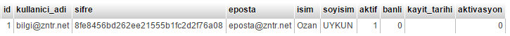
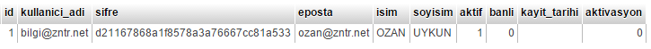

User(Kullanıcı) Kütüphanesi
Kullanıcılar veya üyelerle ilgili bir takım işlemlerin yapıldığı sınıftır. Yeni üyelik, siteye giriş, aktivasyon, üye bilgilerini kullanma gibi işevleri vardır.
| User(Kullanıcı) Kütüphanesi ve Yöntemleri | |
|---|---|
| Siteye Kayıt Olmak | User::register() |
| Siteye Giriş Yapmak | User::login() |
| Üyelik Bilgilerini Güncellemek | User::update() |
| Üyelik Oturumunu Kapatmak | User::logout() |
| Üye Girişinin Yapılıp Yapılmadığını Kontrol Etmek | User::isLogin() |
| Oturum Açan Üyenin Bilgilerine Ulaşmak | User::data() |
| Şifremi Unuttum Sistemi Oluşturmak | User::forgotPassword() |
| Aktivasyon İşlemini Tamamlamak | User::activationComplete() |
| Üye İşlemleri Esnasında Oluşan Hataları Öğrenmek | User::error() |
| Üye İşlemlerinin Başarı İle Tamamlandığı Bilgisini Almak | User::success() |
| Üye Sayısını Öğrenmek | User::count() |
| Aktif Üye Sayısını Öğrenmek | User::activeCount() |
| Banlı Üye Sayısını Öğrenmek | User::bannedCount() |
Siteye Kayıt Olmak
Üyelerin kaydolmalarını sağlamak için kullanılan yöntemdir. 3 adet parametresi vardır.
| Opsiyonel Seçenekler | Parametre | Anlamları |
|---|---|---|
| ->column()->column...->column() | 1 - Kayıt Bilgileri | Veritabanına kayıt yapılacak veriler. |
| ->autoLogin() | 2 - Otomatik Giriş | Bu parametrenin true olması durumunda kayıt işleminden sonra otomatik giriş yapılır. Eğer false olarak ayarlanırsa herhangi bir işlem yapılmaz. Kayıttan sonra farklı bir sayfaya yönlendirilmek istenirse string URI yazılır. |
| ->returnLink() | 3 - [ Aktivasyon Dönüş Linki ] | Aktivasyon işlemi yapılacaksa bu parametre girilir. Örnek: kayit/aktivasyon |
Active, banned ve activasyon sütunlarını User kütüphanesi kendi kullanmaktadır bu yüzden bizim bu sütunlarla işimiz olmayacak.
// Bu bilgilerin form nesnelerinden geldiğini varsayalım. $bilgiler =array ('kullanici_adi' =>'bilgi@zntr.net' ,'sifre' =>'zntr1234' ,'eposta' =>'eposta@zntr.net' ,'isim' =>'Ozan' ,'soyisim' =>'UYKUN' ); User::register($bilgiler ,'kullanici/giris' ,'kayit/aktivasyon/kullanici' );output ( User::error() );// boolean false output ( User::success() );// string 'Kaydınızı başarı ile tamamlandı.' (length=38) /* Aktivasyon e-postası kullanıcıya ulaşmıssa e-posta içinde şöyle bir url ile kaşılacak. http://www.ornek.com/index.php/kayit/aktivasyon/kullanici/bilgi@zntr.net/8fe8456bd262ee215555b1fc2d2f76a08 */ 
Görüldüğü gibi konfigürasyon ayarları yapıldıktan sonra bir üyenin kayıt olması işlemi bu kadar basittir. Tabi burada herhangi bir gelen veri kontrolü yapılmamıştır bu kontrolü Validation kütüphanesinı anlatırken değineceğiz siz formlardan gelen verileri validasyon kontrolüne tabi tutmalısınız.
Siteye Giriş Yapmak
Kayıtları yapılan üyelerin siteye girmesini sağlamak için oluşturulan yöntemdir.
| Opsiyonel Seçenekler | Parametre | Anlamları |
|---|---|---|
| ->username() | 1 - Kullanıcı Adı | Sisteye giriş yapılacak kullanıcı adı. |
| ->password() | 2 - Şifre | Siteye giriş için gerekli olan kullanıcı şifresi. |
| ->remember() | 3 - [ Beni Hatırlasın Mı = false ] | Bir sonraki giriş için kullanıcı adı hatırlansın mı? |
// Bu bilgilerin form nesnelerinden geldiğini varsayalım. User::login('bilgi@zntr.net' ,'zntr1234' );// Az önce oluşturduğumuz kullanıcı adı ve şifre bilgisini burada veri olarak giriyoruz. output ( User::error() );// boolean false output ( User::success() );// string 'Başarı ile giriş yaptınız. Yönlendiriliyorsunuz.. Lütfen bekleyin.' (length=73)
Üyelik Bilgilerini Güncellemek
Bu yöntemin esas işlevi üyenin şifre bilgilerinin güncellemesidir. Ancak istenirse şifre güncellenirken yanında başka verilerilerin güncellenmesine de olanak sağlar.
| Opsiyonel Seçenekler | Parametre | Anlamları |
|---|---|---|
| ->oldPassword() | 1 - Eski Şifre | Kullanıcının eski şifresi. |
| ->newPassword() | 2 - Yeni Şifre | Kullanıcının yeni şifresi. |
| ->passwordAgain() | 3 - [ Yeni Şifre Tekrar ] | Yeni şifrenin tekrarı girilmezse Yeni Şifre parametresinin değerini alır. |
| ->column()->column...->column() | 4 - [ Diğer Bilgiler ] | Güncellenmek istenen başka veriler varsa bu parametreye dizi olarak girilir. |
// Bu bilgilerin form nesnelerinden geldiğini varsayalım. $bilgiler =array ('isim' =>'OZAN' ,'eposta' =>'ozan@zntr.net' );// param1 = eski şifre, param2 = yeni şifre, param3 = yeni şifre tekrar, param4 = diğer bilgiler. User::update('zntr1234' ,'zntr12' ,'zntr12' ,$bilgiler );output ( User::error() );// boolean false output ( User::success() );// string 'Güncelleme işlemi başarılı.' (length=32) 
Üyelik Oturumunu Kapatmak
Aktif kullanıcının oturumunu sonlandırmak için kullanılır.
// Bu bilgilerin form nesnelerinden geldiğini varsayalım. User::logout();// Bu satır itibari ile oturum sonlandırılmıştır. output ( User::error() );// boolean false output ( User::success() );// boolean false
Üye Girişinin Yapılıp Yapılmadığını Kontrol Etmek
Kullanıcının siteye giriş yapıp yapmadığı bilgisini verir eğer giriş yapmış ise true değeri döner aksi halde false değeri döner.
// Bu bilgilerin form nesnelerinden geldiğini varsayalım. if ( User::isLogin() )echo "Kullanıcı sitede aktif" ;else echo "Kullanıcı aktif değil" ;// Az önce User::logout() ile çıkış yapıldığından Çıktı: Kullanıcı aktif değil olacaktır.
Oturum Açan Üyenin Bilgilerine Ulaşmak
Giriş yapan kullanıcıların üyelik bilgilerine ulaşmak için kullanılır. Bilgiler object veri tipinde dönmektedir.
| Parametre | Anlamları |
|---|---|
| 1 - [ Tablo Adı ] | Şayet üyeler bilgisini tutan birden fazla tablo var ve bu tablolar arasıda birleştirme yapılmışsa hangi tabloya ait verilerin alınacağı belirtilmelidir. Aksi halde birleştirilmiş sütunlara ait tüm tabloların verilerine ulaşılır. |
// Bu bilgilerin form nesnelerinden geldiğini varsayalım. User::login('bilgi@zntr.net' ,'zntr12' );output ( User::data() );/* object(stdClass)[2] public 'id' => string '1' (length=1) public 'kullanici_adi' => string 'bilgi@zntr.net' (length=14) public 'sifre' => string 'd21167868a1f8578a3a76667cc81a533' (length=32) public 'eposta' => string 'ozan@zntr.net' (length=13) public 'isim' => string 'OZAN' (length=4) public 'soyisim' => string 'UYKUN' (length=5) public 'aktif' => string '1' (length=1) public 'banli' => string '0' (length=1) public 'kayit_tarihi' => string '' (length=0) public 'aktivasyon' => string '0' (length=1) bilgi@zntr.net */ echo User::data()->kullanici_adi;Birleştirilmiş tablolardan yararlınılmışsa verinin seçileceği tablo adı belirtilmelidir. echo User::data('kullanici' )->kullanici_adi;
Şifremi Unuttum Sistemi Oluşturmak
Kullanıcıların şifrelerini unutmaları durumunda kullanıcıların e-posta adreslerine yeni şifrelerinin gönderimini sağlar.
| Opsiyonel Seçenekler | Parametre | Anlamları |
|---|---|---|
| ->email() | 1 - E-posta Adresi | Yeni şifrenin gönderileceği e-posta adresi girilir. |
| ->returnLink() | 2 - [ Geri Dönüş URL Adresi ] | Gelen şifremi unuttum e-postası açıldığında içerisinde dönüş için bir link olacak onun belirlenmesini sağlar. Örnek kullanici/giris |
// Bu bilgilerin form nesnelerinden geldiğini varsayalım. // param1 = e-posta adresi, param2 = http://www.ornek.com/index.php/kullanici/giris. User::forgotPassword('bilgi@zntr.net' ,'kullanici/giris' );// 1. Parametre e-posta. // 2. Parametre'nin esas değeri = http://www.ornek.com/index.php/kullanici/giris şeklinde e-posta içeriğine siteye dönüş linki olarak yansıyacaktır. output ( User::success() );// string 'E-posta başarı ile gönderildi.' (length=22) output ( User::error() );// boolean false
Yeni şifreyi gönderebilmek için önce e-posta sütununa bakılır böyle bir sütun yok ise kullanıcı adı sütununa bakılır kullanıcı adı sütunuda e-posta bilgisi içermiyorsa yeni şifre gönderim işlemi tamamlanamaz ve "sistemde kayıtlı değilsiniz hatası" alırsınız.
Üye Sayısını Öğrenmek
Kayıtlı üye sayısını verir.
Aktüf Üye Sayısını Öğrenmek
Aktif üye sayısını verir.
Banlı Üye Sayısını Öğrenmek
Banlı üye sayısını verir.
Aktivasyon İşlemini Tamamlamak
Eğer aktivasyon işlemi kullanılmışsa User::register() yönteminin ikinci parametresinde dönüş yolu verilir işte bu dönüş yolu aktivasyon işleminin tamamlanacağı sayfanın ta kendisidir. E-posta adresine gönderilen aktivasyon linkine tıklayan kullanıcı sizin belirlediğiniz sayfaya yönlenir bu sayfaya gelen kullanıcının aktivasyon işleminin tamamlanmış olması için bu sayfada User::activationComplete() fonksiyonun kullanılmış olması gerekir. Aktivasyon işlemi başarılı olursa yöntemin döndüreceği değerler başarılı olursa